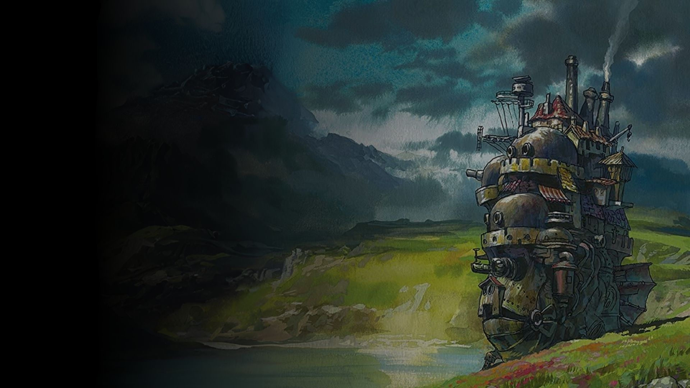

Howl`s Moving Castle
Movie
2h 23m

Resume Sophie, a young milliner and eldest of three sisters, encounters a wizard named Howl on her way to visit her sister Lettie. Upon returning home, she meets the Witch of the Waste, who transforms her into a 90-year-old woman. Seeking to break the curse, Sophie leaves home and sets off through the countryside. She meets a living scarecrow, whom she calls "Turnip Head". He leads her to Howl's moving castle where she enters without invitation. She subsequently meets Howl's young apprentice Markl and a fire demon named Calcifer, the source of the castle's magic and movement. Calcifer makes a deal with Sophie, agreeing to break her curse if she breaks his link with Howl. When Howl appears, Sophie announces that she has "hired herself" as a cleaning lady.
Adventure
Drama
Fantasy
Science Fiction
Romantic Cinema
MOVIE